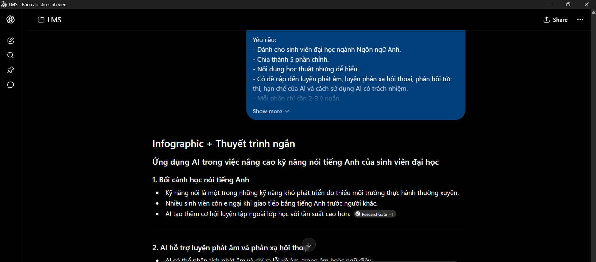
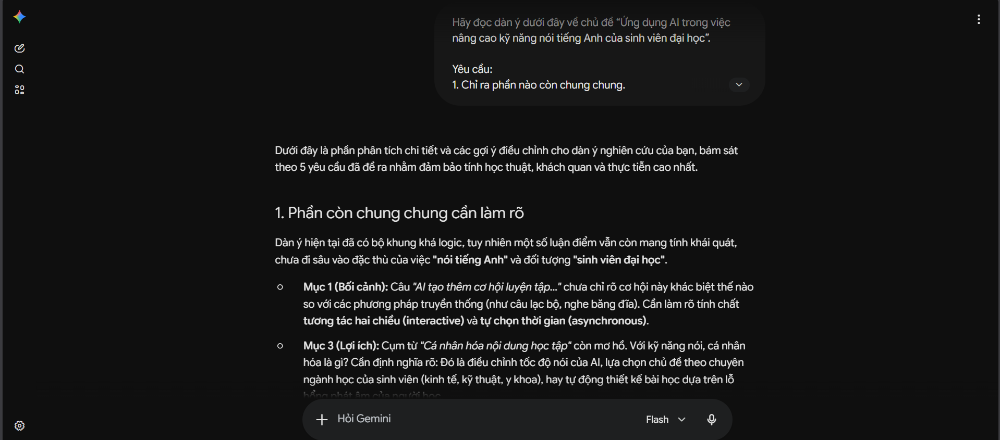
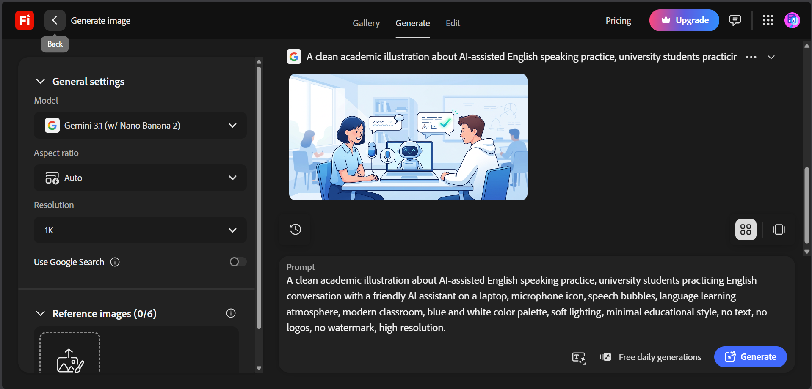
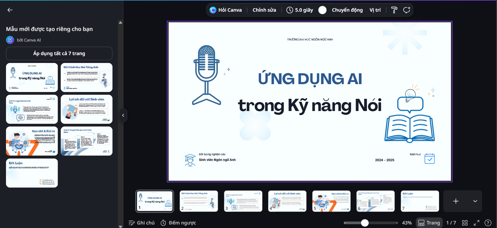
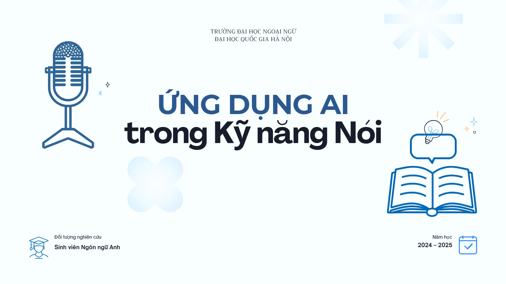

ĐẠI HỌC QUỐC GIA HÀ NỘI
TRƯỜNG ĐẠI HỌC NGOẠI NGỮ

BÁO CÁO CÁ NHÂN
SỬ DỤNG CÔNG CỤ AI TẠO SINH
TRONG QUÁ TRÌNH SÁNG TẠO NỘI DUNG SỐ
| Sinh viên | Hoàng Chu Mỹ Anh |
|---|---|
| Ngành | Ngôn ngữ Anh |
| Khoa | Ngôn ngữ và Văn hóa Anh |
| Trường | Trường Đại học Ngoại ngữ - ĐHQGHN |
| Mã sinh viên | 25040391 |
| Lớp | VNU1001_E252058 |
Hà Nội, 2026.
1. Thông tin chung về dự án sáng tạo nội dung
Dự án cá nhân được lựa chọn là thiết kế một infographic kết hợp bài thuyết trình ngắn với chủ đề “Ứng dụng AI trong việc nâng cao kỹ năng nói tiếng Anh của sinh viên đại học”. Sản phẩm hướng tới sinh viên ngành Ngôn ngữ Anh, giúp người xem hiểu cách AI có thể hỗ trợ luyện phát âm, luyện hội thoại, mở rộng vốn từ, tăng sự tự tin khi nói tiếng Anh và hình thành thói quen tự học có kiểm soát.
Mục tiêu của dự án không phải là để AI tự làm toàn bộ sản phẩm, mà là sử dụng AI như một công cụ hỗ trợ tìm ý tưởng, xây dựng nội dung, tạo chất liệu hình ảnh minh họa và tối ưu bố cục thiết kế. Người thực hiện vẫn chịu trách nhiệm chọn lọc thông tin, chỉnh sửa ngôn ngữ, kiểm tra tính phù hợp với bối cảnh học tiếng Anh và hoàn thiện sản phẩm cuối cùng bằng đóng góp cá nhân.
2. Các công cụ AI tạo sinh đã sử dụng
| Công cụ | Nhóm công cụ | Vai trò trong dự án |
|---|---|---|
| ChatGPT | AI tạo văn bản | Lên dàn ý, viết bản nháp nội dung, gợi ý tiêu đề và cách chia mục cho infographic về luyện nói tiếng Anh. |
| Google Gemini | AI tạo văn bản/kiểm tra nội dung | So sánh bản nháp, bổ sung góc nhìn học thuật, chỉ ra phần cần viết rõ hơn hoặc tránh khẳng định thiếu căn cứ. |
| Adobe Firefly | AI tạo hình ảnh | Tạo nền minh họa nhẹ theo chủ đề học tiếng Anh, giao tiếp và công nghệ giáo dục, dùng như chất liệu trang trí. |
| Canva AI | AI hỗ trợ thiết kế | Dựng bố cục infographic, gợi ý bảng màu, font chữ, icon và sắp xếp nội dung trực quan. |
Việc dùng nhiều công cụ giúp quá trình sáng tạo không bị phụ thuộc vào một nguồn duy nhất. ChatGPT cho kết quả mạch lạc về cấu trúc, Gemini phù hợp để phản biện và kiểm tra tính cân bằng của nội dung, Firefly hỗ trợ phần hình ảnh minh họa, còn Canva AI giúp chuyển ý tưởng thành bố cục trực quan dễ trình bày.

Ảnh 1: Màn hình ChatGPT tạo dàn ý nội dung infographic.

Ảnh 2: Màn hình Gemini góp ý và phản biện nội dung.3. Quá trình sử dụng AI và kết quả nhận được
Quy trình thực hiện được chia thành bốn bước: xác định chủ đề, tạo bản nháp nội dung, tạo chất liệu hình ảnh, sau đó tích hợp và chỉnh sửa trên Canva. Mỗi bước đều có phần đầu vào rõ ràng, kết quả đầu ra và quyết định chỉnh sửa của cá nhân.
| Công cụ | Prompt/đầu vào chính | Kết quả và cách xử lý |
|---|---|---|
| ChatGPT | “Hãy lập dàn ý cho một infographic 1 trang về chủ đề ứng dụng AI trong việc nâng cao kỹ năng nói tiếng Anh của sinh viên đại học. Nội dung cần dễ hiểu, chia thành 5 phần và tránh viết như quảng cáo.” | AI đề xuất cấu trúc gồm: bối cảnh học nói tiếng Anh, vai trò của AI, lợi ích, hạn chế và cách sử dụng hiệu quả. Tôi giữ lại cấu trúc chính nhưng rút gọn câu chữ để phù hợp với infographic. |
| Gemini | “Hãy đọc bản nháp sau và chỉ ra phần nào dễ gây hiểu nhầm về việc dùng AI để luyện nói tiếng Anh. Gợi ý cách viết trung tính, học thuật hơn.” | Gemini góp ý không nên khẳng định AI chắc chắn giúp mọi sinh viên nói tốt hơn; cần nhấn mạnh AI chỉ là công cụ hỗ trợ và hiệu quả còn phụ thuộc vào phương pháp học, mức độ luyện tập và giao tiếp thực tế. |
| Adobe Firefly | “Modern English learning background, soft paper texture, students practicing speaking, microphone, speech bubbles, AI learning icons, clean educational infographic background, no text, no logo.” | Firefly tạo nền trang trí nhẹ. Tôi chỉ chọn phần biểu tượng và họa tiết liên quan đến giao tiếp, giảm độ nổi bật để nội dung chữ không bị rối. |
| Canva AI | “Create a clean educational infographic layout about how AI supports English speaking skills for university students, with five sections, soft academic colors, icons, and space for short Vietnamese notes.” | Canva gợi ý bố cục theo từng khối. Tôi chỉnh lại màu, giảm icon thừa, sắp xếp lại thứ tự nội dung theo logic từ bối cảnh đến khuyến nghị sử dụng. |
4. Chỉnh sửa và tích hợp đầu ra của AI
Sau khi nhận kết quả từ các công cụ AI, tôi không sử dụng nguyên văn toàn bộ nội dung. Các đoạn do AI tạo ra thường dài hoặc có xu hướng khẳng định quá rộng, vì vậy tôi rút gọn thành các cụm ý ngắn, phù hợp với không gian của infographic. Những ý chính như luyện phát âm, mô phỏng hội thoại, phản hồi tức thì, tự học và giới hạn của AI được giữ lại nhưng được viết lại bằng ngôn ngữ dễ hiểu hơn.
Ở phần hình ảnh, tôi dùng chất liệu do Firefly tạo ra làm nền minh họa theo chủ đề học tiếng Anh, giao tiếp và công nghệ giáo dục. Trong Canva, tôi chỉnh lại kích thước tiêu đề, thống nhất màu sắc, giảm biểu tượng thừa và ưu tiên khoảng trắng để sản phẩm trông rõ ràng hơn. Nội dung cuối cùng là kết quả kết hợp giữa đề xuất của AI và quyết định biên tập cá nhân.
5. So sánh hiệu quả giữa các công cụ AI
| Công cụ | Điểm mạnh | Hạn chế | Cách sử dụng hiệu quả |
|---|---|---|---|
| ChatGPT | Mạnh về cấu trúc, diễn đạt mạch lạc, dễ yêu cầu sửa theo tiêu chí cụ thể. | Đôi khi viết hơi dài hoặc khẳng định quá rộng về hiệu quả của AI, cần kiểm tra lại để tránh diễn giải thiếu cân bằng. | Dùng ở giai đoạn lên ý tưởng và viết bản nháp. |
| Google Gemini | Phù hợp để so sánh, phản biện, đặt câu hỏi kiểm tra tính hợp lý của bản nháp. | Có lúc gợi ý quá nhiều hướng, cần chọn lọc để không làm sản phẩm bị loãng hoặc xa chủ đề luyện nói tiếng Anh. | Dùng ở giai đoạn rà soát và hoàn thiện nội dung. |
| Adobe Firefly | Tạo hình nền và họa tiết nhanh, phong cách đẹp, dễ kiểm soát bằng prompt. | Không nên dùng ảnh tạo sinh như minh chứng thực tế về lớp học hoặc người học thật. | Dùng làm chất liệu trang trí, không thay thế ảnh tư liệu hoặc minh chứng học tập thật. |
| Canva AI | Nhanh trong việc dựng bố cục, gợi ý màu sắc và chuyển nội dung thành thiết kế. | Bố cục ban đầu còn phổ thông, cần chỉnh thủ công để tránh cảm giác giống mẫu có sẵn. | Dùng để hoàn thiện sản phẩm cuối cùng. |
Qua so sánh, công cụ có ảnh hưởng lớn nhất đến chất lượng nội dung là ChatGPT và Gemini, vì hai công cụ này giúp hình thành logic trình bày và kiểm tra mức độ khách quan của luận điểm. Tuy nhiên, công cụ làm thay đổi rõ nhất về hình thức sản phẩm là Canva AI. Nếu chỉ dùng AI tạo văn bản mà không có bước thiết kế, sản phẩm khó hấp dẫn người xem. Ngược lại, nếu chỉ dùng AI thiết kế mà thiếu kiểm tra nội dung, sản phẩm có thể đẹp nhưng chưa chắc phù hợp với mục tiêu học tập.
6. Sản phẩm cuối cùng và minh chứng trung gian
Sản phẩm cuối cùng là một infographic/bài thuyết trình ngắn về ứng dụng AI trong việc nâng cao kỹ năng nói tiếng Anh, gồm năm phần chính: bối cảnh học nói tiếng Anh, vai trò của AI, lợi ích đối với sinh viên, hạn chế khi lạm dụng AI và cách sử dụng AI hiệu quả. Sản phẩm được thiết kế theo phong cách học thuật hiện đại, màu sắc nhẹ, có biểu tượng liên quan đến giao tiếp, ngôn ngữ, micro và công nghệ giáo dục.

Ảnh 3: Firefly tạo nền/hình minh họa về học tiếng Anh và giao tiếp.

Ảnh 4: Canva AI tạo bố cục ban đầu.

Ảnh 5: Sản phẩm hoàn thiện cuối cùng.
7. Phân tích vai trò của AI trong quá trình sáng tạo
AI giúp rút ngắn đáng kể thời gian khởi động dự án. Thay vì bắt đầu từ một trang trống, tôi có thể nhanh chóng có dàn ý, tiêu đề, cách chia mục và một số phương án bố cục để lựa chọn. Điều này đặc biệt hữu ích khi làm nội dung số, vì người thực hiện cần vừa có nội dung đúng, vừa có hình thức trình bày dễ tiếp nhận.
Tuy nhiên, AI không thay thế hoàn toàn vai trò của người học. Những phần AI làm tốt là gợi ý ý tưởng, viết bản nháp, tạo phương án thiết kế ban đầu và giúp so sánh nhiều cách trình bày. Những phần AI còn hạn chế là khả năng đánh giá chính xác năng lực nói thực tế của từng sinh viên, khả năng hiểu sắc thái giao tiếp trong bối cảnh thật và mức độ độc đáo của thiết kế. Nếu không chỉnh sửa, sản phẩm dễ bị chung chung hoặc quá phụ thuộc vào mẫu có sẵn.
8. Vấn đề đạo đức và trách nhiệm khi dùng AI
Trong quá trình sử dụng AI, tôi cần lưu ý ba vấn đề đạo đức chính. Thứ nhất, phải khai báo rõ việc có sử dụng AI trong quá trình sáng tạo. Thứ hai, không coi hình ảnh hoặc nội dung do AI tạo ra là bằng chứng học thuật nếu chưa được kiểm chứng. Thứ ba, không sao chép nguyên văn toàn bộ kết quả AI mà không biên tập, vì sản phẩm cuối cùng phải thể hiện đóng góp cá nhân.
Với chủ đề học tiếng Anh, việc sử dụng AI càng cần cẩn trọng vì AI có thể đưa ra gợi ý chưa phù hợp với trình độ, ngữ cảnh giao tiếp hoặc mục tiêu học tập của người dùng. AI có thể hỗ trợ luyện phát âm, tạo tình huống hội thoại và gợi ý cách diễn đạt, nhưng không thể thay thế hoàn toàn giao tiếp thật với giáo viên, bạn học hoặc người bản ngữ. Vì vậy, tôi chỉ dùng AI để hỗ trợ sáng tạo và luôn thực hiện bước đọc lại, chỉnh sửa, chọn lọc thông tin trước khi đưa vào sản phẩm.
9. Kết luận
Qua dự án này, tôi nhận thấy AI tạo sinh là công cụ hỗ trợ hiệu quả cho quá trình sáng tạo nội dung số, đặc biệt ở các bước lên ý tưởng, xây dựng bản nháp và thiết kế hình ảnh. Tuy vậy, chất lượng sản phẩm phụ thuộc nhiều vào cách đặt prompt, khả năng đánh giá kết quả và mức độ chỉnh sửa của người thực hiện. Khi được sử dụng có trách nhiệm, AI giúp sinh viên ngành Ngôn ngữ Anh làm việc nhanh hơn, có nhiều phương án sáng tạo hơn và rèn luyện tư duy biên tập tốt hơn.